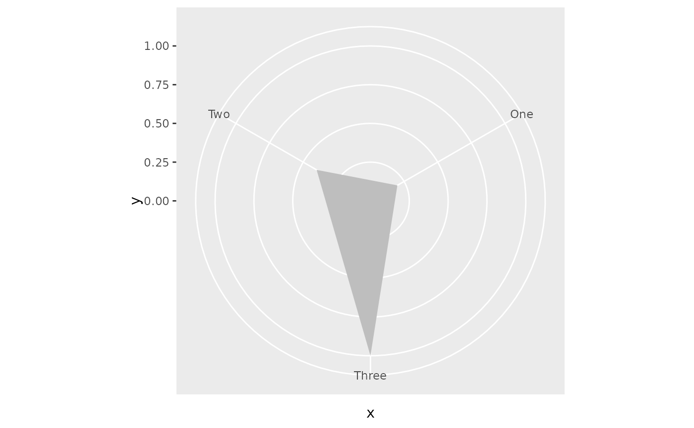

Radar area for polar plot
geom_radar_area.RdDraws a closed area. For continuous scale ensures that first and last points do not share same angular position.
Usage
geom_radar_area(
mapping = NULL,
data = NULL,
stat = "identity",
position = "identity",
...,
show.legend = NA,
inherit.aes = TRUE
)Arguments
- mapping
Set of aesthetic mappings created by
aes(). If specified andinherit.aes = TRUE(the default), it is combined with the default mapping at the top level of the plot. You must supply mapping if there is no plot mapping.- data
The data to be displayed in this layer.
- stat
The statistical transformation to use on the data for this layer.
- position
A position adjustment to use on the data for this layer.
- ...
Other arguments passed on to
layer()'s params argument.- show.legend
logical. Should this layer be included in the legends?
- inherit.aes
If
FALSE, overrides the default aesthetics, rather than combining with them.
Examples
example_df <- data.frame(x = factor(c("One", "Two", "Three")),
y = c(0.2, 0.4, 1.0))
ggplot2::ggplot(example_df, ggplot2::aes(x = x, y = y)) +
geom_radar_area() +
ggplot2::coord_polar() +
ggplot2::ylim(0, 1)
#> Warning: Using the `size` aesthetic in this geom was deprecated in ggplot2 3.4.0.
#> ℹ Please use `linewidth` in the `default_aes` field and elsewhere instead.
